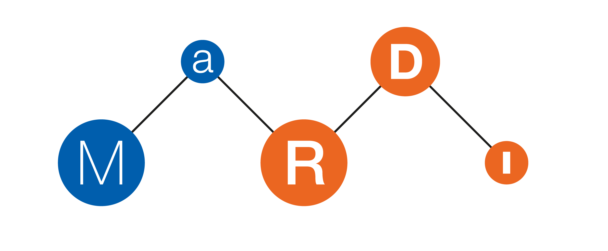

<!DOCTYPE html>
<html lang="en">
  <head>
    <meta charset="utf-8" />
    <meta name="viewport" content="width=device-width, initial-scale=1.0, maximum-scale=1.0, user-scalable=no" />

    <title>openInterfaces</title>
    <link rel="shortcut icon" href="./favicon.ico" />
    <link rel="stylesheet" href="./dist/reset.css" />
    <link rel="stylesheet" href="./dist/reveal.css" />
    <link rel="stylesheet" href="./dist/theme/black.css" id="theme" />
    <link rel="stylesheet" href="./css/highlight/github.css" />

    <link rel="stylesheet" href="./_assets/slides/template_extra.css" />

    </head>
  <body>
    <div class="reveal">
      <div class="slides"><section  data-markdown><script type="text/template">

# `Towards Foundations for Open Interfaces for Scientific Computing`

<small>René Fritze</small>

<small>rene.fritze@wwu.de</small>

<small>Mathematics Münster</small>

<small>October 28, 2022</small>

<small>*1st MaRDI Workshop on Scientific Computing*</small>
</script></section><section  data-markdown><script type="text/template">
# `openInterfaces`

<small>René Fritze</small>

<small>rene.fritze@wwu.de</small>

<small>Mathematics Münster</small>

<small>October 28, 2022</small>

<small>*1st MaRDI Workshop on Scientific Computing*</small>
</script></section><section  data-markdown><script type="text/template">
<div class="container">

<div>

## Get the slides

[https://rene.fritze.me/22-10-mardi-workshop](https://rene.fritze.me/22-10-mardi-workshop)

</div>

<div>

</div>
</div>
</script></section><section  data-markdown><script type="text/template">


</script></section><section  data-markdown><script type="text/template">
# Outline

1. A story
1. Goals
2. Prototype
3. The future
</script></section><section  data-markdown><script type="text/template">
# A story
</script></section><section  data-markdown><script type="text/template">


## Meet Alice

- Alice has a new project: implement model order reduction for a
  complex PDE with specifically structured input data

<div class="footnote">

[Portrait illustration vector created by freepik - www.freepik.com](https://www.freepik.com/vectors/portrait-illustration)

</div></script></section><section  data-markdown><script type="text/template">
## Meet Alice

- She inherited a C++ solver for the PDE
- She found a Julia package that can generate vector fields that
  exactly fit her model
- She discovered that pyMOR already implements all the MOR methods she'll need
</script></section><section  data-markdown><script type="text/template">
## Option 1

- Reimplement the data field generation in her C++ code
- Reimplement all the MOR methods in her C++ code
</script></section><section  data-markdown><script type="text/template">
## Option 2

- Learn the internals of calling Julia and Python Code
from C++
- Write custom bindings for her C++ solver
</script></section><section  data-markdown><script type="text/template">
## Downsides

- Lots of code to rewrite.
- Translation needs expertise in 3 languages to get right.
- Writing bindings very different from usual workload
- Portability + Maintainability
</script></section><section  data-markdown><script type="text/template">
## Option 3?

What if she could structure her code in a way
that enabled her to plug in a tool that does the bindings for her?
</script></section><section  data-markdown><script type="text/template">
# `openInterfaces` Goals

- develop and establish open interface standards
- interconnect disparate numerical softwares
- lower the "I" barrier in FAIR
</script></section><section  data-markdown><script type="text/template">
## interface standards

- data abstraction specifications
- API requirements for algorithms
</script></section><section  data-markdown><script type="text/template">
## disparate software

Two packages adhering to `openInterface` standards
should be able to call into one another, no matter
their implementation language.
</script></section><section  data-markdown><script type="text/template">
<div class="container">

<div>

# Prototype

[https://github.com/MaRDI4NFDI/open-interfaces/](https://github.com/MaRDI4NFDI/open-interfaces/)

</div>

<div>

</div>
</div>
</script></section><section  data-markdown><script type="text/template">
## Prototype Project Setup

```mermaid
graph LR;
   Driver ==== Connector ==== Implementor;
```
</script></section><section  data-markdown><script type="text/template">
## Prototype Project Setup

- Connector is a C library
- Driver isolated from Implementor
- Drivers can dynamically load or statically link against Connector
- Connector dynamically loads Implementor
</script></section><section  data-markdown><script type="text/template">
## Runtime flow

```mermaid
sequenceDiagram
  autonumber
  participant Driver
  participant Connector
  participant Implementor

  Driver -->>+ Connector: (loads shared object)
  Driver ->>+ Connector: initialize language X
  Connector ->>+ Implementor: loads shared object
  Connector ->>+ Implementor: initialize
  Driver ->>+ Connector: call interface Function
  Connector ->>+ Implementor: call implementation
```
</script></section><section  data-markdown><script type="text/template">
## Algorithm test cases

1. String expression evaluation
2. Linear system solve

   $Ax=b$
</script></section><section  data-markdown><script type="text/template">
## API Design

```C
// Connector's interface (What the Drivers, aka Alice, see)
int oif_connector_init(const char *lang);
int oif_connector_eval_expression(const char *str);
int oif_connector_solve(int N, double* A,
                        double* b, double *x);
void oif_connector_deinit();
```
</script></section><section  data-markdown><script type="text/template">
## API Design

```C
// Implementor's interface (What the Connector sees)
int oif_lang_init();
int oif_lang_eval_expression(const char *str);
int oif_lang_solve(int N, double* A,
                   double* b, double *x);
void oif_lang_deinit();
```
</script></section><section  data-markdown><script type="text/template">
## Python -> Julia Example

```mermaid
sequenceDiagram
  autonumber
  participant Driver
  participant Connector
  participant Implementor

  Driver ->>+ Connector: ctypes.CDLL("liboif_connector.so")
  Driver ->>+ Connector: oif_connector_init("julia")
  Connector ->>+ Implementor: dlopen("liboif_julia.so")
  Connector ->>+ Implementor: oif_lang_init()
  Driver ->>+ Connector: oif_connector_eval_expression("print(6*7)")
  Connector ->>+ Implementor: oif_lang_eval_expression("print(6*7)")
```
</script></section><section  data-markdown><script type="text/template">
## Available Drivers and Implementors

- C
- C++
- Python
- Julia
- (R)
</script></section><section  data-markdown><script type="text/template"><!--
## Misc

- Testing all Driver -> Implementor Combinations (with pytest)
- Documentation Setup (Sphinx + Doxygen via breathe) -->
</script></section><section  data-markdown><script type="text/template">
# The near future

- Learn more from existing interopability projects like xSDK,
  FlexiBLAS, preCICE, FitBenchmarking
- Complete native, parametrized test suites for all drivers
</script></section><section  data-markdown><script type="text/template">
# The future

- Evolve the prototype with pyMOR as an incubator.
- Reach out to other potential pilot users.
- Provide abstractions for the benchmark framework (MaRDI TA2).
</script></section><section  data-markdown><script type="text/template">
# The far future

- Community created, machine readable, composable, API specifications.
</script></section><section  data-markdown><script type="text/template">
# The far future

- Code generator for multiple languages that consumes these specs.
</script></section><section  data-markdown><script type="text/template">
# The far future

- Multiple "backends" for data transfer
</script></section><section  data-markdown><script type="text/template">
# The far future

- Implementing openInterfaces becomes community-wide best practice
</script></section><section  data-markdown><script type="text/template">
<div class="container">

<div>

## Questions?

[https://rene.fritze.me/22-10-mardi-workshop](https://rene.fritze.me/22-10-mardi-workshop)

</div>

<div>

</div>
</div>
</script></section></div>
    </div>

    <script src="./dist/reveal.js"></script>

    <script src="./plugin/markdown/markdown.js"></script>
    <script src="./plugin/highlight/highlight.js"></script>
    <script src="./plugin/zoom/zoom.js"></script>
    <script src="./plugin/notes/notes.js"></script>
    <script src="./plugin/math/math.js"></script>
    <script>
      function extend() {
        var target = {};
        for (var i = 0; i < arguments.length; i++) {
          var source = arguments[i];
          for (var key in source) {
            if (source.hasOwnProperty(key)) {
              target[key] = source[key];
            }
          }
        }
        return target;
      }

          // default options to init reveal.js
          var defaultOptions = {
            controls: true,
            progress: true,
            history: true,
            center: true,
            transition: 'slide', // none/fade/slide/convex/concave/zoom
            controls: false,
            slideNumber: false,
            plugins: [
              RevealMarkdown,
              RevealHighlight,
              RevealZoom,
              RevealNotes,
              RevealMath
            ]
          };

      // options from URL query string
          var queryOptions = Reveal().getQueryHash() || {};

          var options = extend(defaultOptions, {"transition":"slide","controls":true,"slideNumber":true}, queryOptions);
        </script>

    <script src="./_assets/lib/mermaid.min.js"></script>
    <script src="./_assets/lib/reveal-mermaid.js"></script>

    <script>
      Reveal.initialize(options);
    </script>
  </body>
</html>
